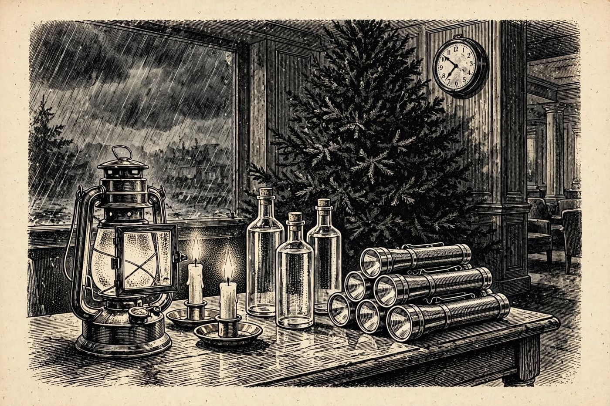

19 de diciembre
Los veinte minutos de la reunión
Libro · págs. 80-83
Audio del día
Transcripción
«El treinta de noviembre, a las siete menos cinco de la tarde, Hugo nos convocó en el vestíbulo para la reunión de tormenta. Durante veinte minutos, el bar quedó completamente solo. En mi libreta de comandas no hay ni una sola nota entre las 18:55 y las 19:15. Quien quisiera cambiar la bandeja L del arcón frigorífico tuvo su ventana perfecta en ese intervalo. Reconstruya el recuento de Hugo tramo a tramo... y verá quién desapareció exactamente cinco minutos.»

Intenta resolverlo primero. Abre solo lo que necesites, en este orden.
1Pista sutil
Lady Cordelia, el Dr. Kessler y Julian Marchetti estuvieron presentes en los cuatro tramos de 5 minutos. Valeria Lombard no bajó en ningún momento.
2Comprobación parcial
En el tramo T3 (19:05 a 19:10), el recuento de Hugo da 3 personas. Quien falta en ese tramo específico es Ingrid Falk.
3Pista fuerte
Si Julian está, Kessler está (T2). Con Cordelia, Kessler y Julian presentes en los cuatro tramos, ya tienes tres presentes siempre. Compara con el recuento de Hugo: en el T3 solo hay 3, así que nadie más estaba. En el resto, solo falta uno de los dos nombres restantes.
4Solución oficialSpoiler si no lo has intentado
Tabla de asistencia:
Cordelia, Kessler y Julian: Presentes en T1, T2, T3 y T4.
Valeria: Ausente en todos los tramos (0/4).
Ingrid: Presente en T1, T2 y T4. Ausente únicamente en T3 (19:05–19:10).
Para el desenlace de la historia, vuelve al libro: la sección de soluciones está al final.